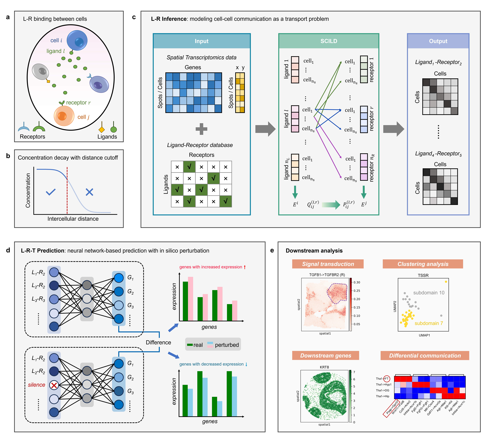

SCILD Documentation
SCILD (Spatial Cellular communication Inference with Ligand Diffusion and transport model) is an interpretable computational framework for inferring spatial cell–cell communication from spatial transcriptomics (ST) data.
{kind=link}
Note
SCILD conceptualizes ligand diffusion and receptor binding as a cargo transport system with potential losses during the transport process. It introduces a high-dimensional tensor optimization framework to quantify spatial communication strength.
Contents
- Introduction
- Installation
- Tutorials
- HumanBreastCancer (Xenium) Analysis Tutorial
- HumanBreastCancer (Visium) Analysis Tutorial
- AdultMouseBrain (Visium) Analysis Tutorial
- MouseCortex (STARmap) Analysis Tutorial
- MouseBrain (MERFISH) Analysis Tutorial
- MOSTA (Stereoseq) Analysis Tutorial
- PDAC (Visium) Analysis Tutorial
- HumanBreastCancer (Xenium) In Silico Knockout Tutorial
- HumanBreastCancer (Visium) In Silico Knockout Tutorial
- AdultMouseBrain (Visium) In Silico Knockout Tutorial
Authors:
Jiating Yu (<yujiating@amss.ac.cn>)
Ling-Yun Wu (<lywu@amss.ac.cn>)
Duanchen Sun (dcsun@sdu.edu.cn)
Source Code: https://github.com/jiatingyu-amss/SCILD
License: MIT